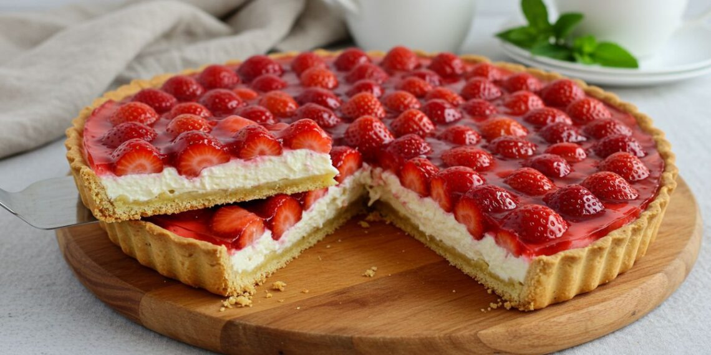

Receita de Torta de Morango
Ingredientes
- 1 pacote de biscoito de maisena
- 100g de manteiga derretida
- 1 lata de leite condensado
- 200ml de creme de leite
- 1 envelope de gelatina sem sabor
- 1 caixinha de morangos frescos
- 2 colheres de sopa de açúcar
- 1/2 xícara de água
Modo de Preparo
- Primeiro, triture os biscoitos de maisena até formar uma farofa.
- Adicione a manteiga derretida e misture até que a massa fique bem homogênea.
- Pressione essa mistura no fundo de uma forma e leve à geladeira para firmar.
- Enquanto isso, faça o creme. Em uma panela, misture o leite condensado, creme de leite e a gelatina sem sabor, previamente hidratada.
- Aqueça tudo em fogo baixo até a gelatina dissolver completamente.
- Despeje o creme sobre a base de biscoito e leve à geladeira por 4 horas.
- Enquanto a torta esfria, prepare a calda de morango: em uma panela, coloque os morangos, açúcar e água. Deixe ferver até que o morango solte sua cor e forme uma calda.
- Deixe a calda esfriar e cubra a torta com ela antes de servir.
